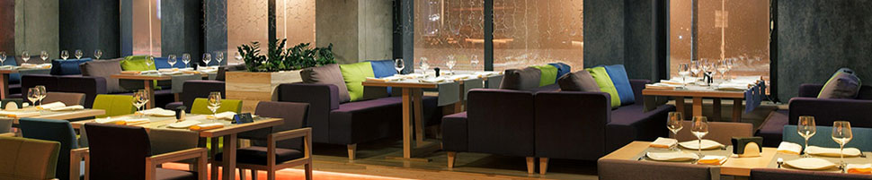
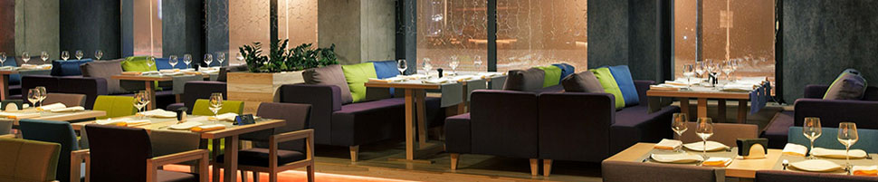

Открывая заведение HoReCa и сферы развлечений, собственники могут выбрать два пути:
- Первый путь:
- Создать собственную структуру управления.
- Вырастить квалифицированные кадры.
- Разработать и внедрить «с нуля» все бизнес-процессы и алгоритмы работы по каждой должности.
- Создать «с нуля» базу поставщиков.
- Прописать стандарты обслуживания, и технологическую документацию.
- Набрать и обучить персонал.
Но это длительный и сложный процесс, который самое главное увеличивает срок окупаемости проекта, а также требующий временных, трудовых и финансовых затрат, сопряжённый со множеством рисков в новом бизнесе.
Второй путь – это оптимизировать расходы на ведение бизнеса в сфере HoReCa и развлечений, передав частично или полностью, процесс управления на период запуска, и становления проекта для специалистов в этой сфере.
- Преимущества работы со специалистами в сфере HoReCa и развлечений на период запуска, становления и выхода на уровень безубыточности новых бизнесов:
- Имеют опыт работы на рынке HoReCa и развлечений.
- Знают специфику работы в сфере гостеприимства.
- Гарантировано обеспечит доходность временно управляемого объекта благодаря оптимизации затратной части и повышению уровня продаж.
- Предоставят команду квалифицированных специалистов в сфере маркетинга, ресторанного бизнеса, управления персоналом, управления финансами и безопасностью, IT-технологий.
- Имеют разработанные стандарты обслуживания для всех направлений услуг, а также систему контроля и оценки качества их выполнения.
- Предлагают потребителям сбалансированный пакет услуг (ассортимент).
- В сжатые сроки способна набрать и обучить персонал заведений HoReCa и развлечений, используя современные hr-методики в сфере подбора и обучения персонала.
- Имеют рабочую базу поставщиков (продукты питания, алкогольные напитки, оборудование, расходные материалы и пр.).
- Имеют собственные наработки в технологии приготовления блюд.
- Дадут рекомендации по организации безопасности бизнеса.
- Обеспечит кризисное управление и санацию в случае необходимости.
Для понимания сложности и систематизации работы заведений HoReCa и сферы развлечений кратко опишем тезисы в управлении данными компаниями. Управление заведением HoReCa и сферы развлечений (готели, рестораны, кафе, детские развлекательные центры, роллердромы, ледовые арены и др.). Готели, рестораны, кафе, бани, SPA, детские развлекательные центры, роллердромы, ледовые арены в наше время - это обязательный атрибут экономики.
Выбор методов и принципов управления такими компаниями напрямую зависит от основной стратегической цели деятельности заведения, его миссии, поскольку именно эти понятия связывают интересы компании с потребностями клиентов и определяют главное конкурентное преимущество бизнеса в целом.
- Миссия заведений HoReCa и сферы развлечений - создание популярного места досуга через:
- организацию отдыха для разных возрастных и социальных групп
- формирование новых стандартов корпоративного отдыха
- предоставление спектра качественных услуг в индустрии HoReCa и гостеприимства
- ведение бизнеса нацеленного на формирование лояльного клиента
Заведения HoReCa и сферы развлечений – это очень специфический бизнес, который требует нестандартного подхода к управлению.
Особенности:
Разноплановость: отель, ресторан, дискотека, караоке, бассейн, баня, SPA, боулинг, бильярд, каток, мини-гольф, теннис, игротека, детское кафе, роллердром, атракционы – каждый элемент требует отдельного подхода и специальных знаний в разных областях.
Высокая технологичность и техническая сложность (автоматизированные системы управления отельным и ресторанным хозяйством, оборудование мини-гольфаб тенниса, бильярда, боулинга, катка, игротеки сложно и требует специальных возможностей для его эксплуатации и обслуживания).
Новаторство - бизнес, который требует новаторского, креативного подхода в сочетании с продуманной и педантично выстроенной системой управления.
- Мы выделим шесть ключевых направлений для успешного управления заведениями HoReCa и сферы развлечений:
- Менеджмент продаж (управление продажами)
- HR менеджмент (управление персоналом)
- Управление маркетинговой деятельностью
- Управление ресторанным хозяйством
- Управление финансово-хозяйственной деятельностью
- Управление безопасностью
I. Менеджмент продаж (управление продажами).
- Понятие «управление продажами» для заведений HoReCa и сферы развлечений включает как управление персоналом, так и управление процессами в области продаж, это область практики, формирующаяся на стыке менеджмента, маркетинга и собственно искусства продаж. Поэтому в систему управления продажами мы включаем следующие элементы:
- Обеспечение высокого уровня качества обслуживания (сервис).
- Знание и выполнение персоналом этапов продаж (установление контакта, выявление потребностей, презентация услуги, преодоление сопротивления, получение заказа, завершение контакта).
- Техническая и технологическая грамотность персонала при работе с оборудованием (кухня, бар, бассейн, баня, мини-гольф, SPA, караоке, боулинг, бильярд, пр.).
- Обеспечение соответствующего технического состояние оборудования. (эксплуатация, ремонт, обновление).
- Применение в продажах современных электронных систем учёта. Контроль и анализ информации (объём продаж, средний чек, анализ продаж по дням недели по часам суток, по категориям товаров, по персоналу, анализ себестоимости, и др.).
- Личная эффективность продавцов. Обучение и личностный рост персонала, задействованного в прямых продажах.
- Создание атмосферы гостеприимства, ориентированности на каждого клиента.
- Мотивация персонала на продажи.
II. HR менеджмент (управление персоналом)
- Роль персонала в сфере услуг (заведения HoReCa и сферы развлечений) очень высока, поскольку обслуживающий песронал является частью конечного продукта, за который клиенты платят деньги. Именно поэтому работа с персоналом является приоритетом и включает следующие направления:
- Формирование кадровой стратегии и кадровой политики. (постановка целей с качественными и количественными показателями по работе с персоналом. Например: нацеливание на работу и обучение молодых специалистов или найм персонала с определенным опытом, выращивание своего менеджмента или найм сформированных специалистов,и т.д )
- Оптимизация организационной структуры - (упразднение, добавление, слияние отдельных отделов).
- Подбор и расстановка кадров.
- Стимулирование и мотивация труда.
- Разработка системы оплаты труда.
- Применение методов материальной мотивации (премии, бонусы, процент от продаж, KPI- ключевые показатели эффективности).
- Нематериальная мотивация (публичное признание, здоровая конкуренция, командный дух ).
Обучение и развитие персонала.
• формирование программы обучения и учебного плана исходя
из компетенций должностей,
• разработка учебных материалов,
• создание системы «продуктовых» и «на́выковых» мини-тренингов,
• проведение социально-психологических тренингов,
• наставничество.
В таком сложном организме, как заведения HoReCa и сферы развлечений лишь чётко выстроенная система обучения может принести желаемый эффект. Учебные материалы, отдельно разработанные для каждой должности дают теоретические знания. Система внутренних мини-тренингов даёт возможность отработать практические навыки сервиса и знание продуктовой линейки. Особое мировоззрение, в основе которого – клиент ориентированность, формируется в ходе социально-психологических тренингов.
- При этом одним из основных методов обучения остаётся наставничество.
- Аттестация и категоризация персонала.
- Адаптация персонала.
- Управление трудовой карьерой (Создание внутреннего резерва и обеспечение условий для карьерного роста).
- Социально-трудовые отношения. Формирование кадровых процедур согласно трудовому Законодательству.
- Формирование корпоративной этики (корпоративные и личностные коммуникации, Dress-код, формирование корпоративных традиций и норм поведения).
Аттестация может использоваться для того, чтобы оценить работу сотрудников в соответствии с принятыми стандартами и принять решение об изменении в их карьерном или материальном положении, помогает определить дальнейшие перспективы развития компании, выявить потребности в обучении, определить результативность работы, прогресс или регресс за определенный промежуток времени.
Задача адаптации - облегчить вхождение сотрудника в должность, наладить системы взаимосвязей и взаимозависимостей с новой для него социальной средой, в которой он сможет реализовать себя как специалист и как личность. Эффективные адаптационные процедуры понижают тревожность новичка, повышают производительность труда, снижают текучесть кадров, что даёт возможность уменьшить издержки на персонал и увеличить прибыльность.
III. Управление маркетинговой деятельностью
Главная цель маркетинга – увеличение продаж через формирование лояльного потребителя, для чего используется большой арсенал маркетинговых инструментов, таких как:
Формирование устойчивого позитивного имиджа, что возможно при сочетании удачных рекламных образов с системой лояльности.
Изучение потребительского спроса и сегментация рынка (направленность кухни, авторская кухня, наличие дополнительных услуг, акцент на шеф-поваре и др.).
Создание и оптимизация ассортиментного портфеля.
• Кухни разных стран мира,
• развлекательные мероприятия и вечеринки,
• детские тематические дни рождения;
• Проведения конференций и презентаций;
• Развлекательная, спортивная, оздоровительная составляющая.
Ценовая политика и специальные ценовые предложения ( цены по времени суток и дням недели, специальные предложения для детей, школьников, студентов, участников системы лояльности и др.).
Система лояльности (дисконтная или бонусная системы). Редко сочетание дисконта и бонусов (балов).
Промоушн: реклама, PR.
BTL-акции: директ-мейл, интернет-маркетинг, стимулирующие акции, ситуационный и ивент-маркетинг.
IV. Управление ресторанным хозяйством
Разработка проекта предприятия питания.
• проектирование основных функциональных зон и технологических потоков,
• проектирование производственно-технологических, складских, технических и гостевых помещений с учётом требований СЭС и МЧС к их организации.
Обеспечение ресторана профессиональным производственно–технологическим оборудованием (закупка, обслуживание, сохранность, ремонт).
технологическое оборудование кухни и бара,
посуда и инвентарь,
текстиль.
Разработка рабочей документации
Технологические и калькуляционные карты,
Рабочие инструкции,
Разработка меню ресторана. (Основное меню, Барная карта, Сезонное меню, Детское меню, Специальные предложения, Банкетное меню).
Организация работы с поставщиками. Определение потенциальных поставщиков товаров на основе анализа соотношения цена-качество, изучение регистрационных документов, проведение переговоров, согласование условий поставок товаров и системы их оплаты, порядок предъявления и условия реализации претензий по качеству (рекламаций), ответственность за не исполнение принятых соглашений, подписание договоров.
Организация учёта, хранения, сбережения и движения товарно-материальных ценностей. Организация работы склада. Контроль соблюдения сроков хранения, реализации и правил товарного соседства.
Организация процесса приготовления блюд и напитков. Соблюдение технологической дисциплины. Контроль качества. Бракераж. Соблюдение санитарных норм и правил охраны труда. Обучение персонала, проработка блюд, контрольные закупки.
Создание атмосферы «гостеприимства». Выполнение стандартов обслуживания.
Политика чаевых. Решение конфликтных и спорных ситуаций.
V. Управление финансово-хозяйственной деятельностью
- Бюджетирование. Планирование доходов и затрат.
- Финансовый контроль. Контроль работы бухгалтерии (оплата счетов, платёжные ведомости, баланс кассовой наличности).
- Управление затратами. Анализ по статьям затрат. Организация контроля над затратами. Разработка плана мероприятий по снижению затрат.
- Эксплуатация инженерных сетей (вода, канализация, отопление, электрические сети, система вентиляции и кондиционирования), рациональное использование и экономия.
- Санитарное состояние помещений. Дезинфекция, дезинсекция, дератизация.
- Утилизация жиров, люминесцентных ламп, пищевых и бытовых отходов.
- Допуск к работе с энергоустановками.
- Логистика.
- Состояние и комплектация санитарных узлов.
- Противопожарное состояние.
- Страхование третьих лиц от несчастных случаев.
VI. Управление безопасностью
- Управление безопасностью охватывает все уровни ведения бизнеса, начиная от планирования и заканчивая получением конечной прибыли.
Составляющие комплексной задачи управления безопасностью включает:
- Сбор и анализ данных финансово-хозяйственной деятельности, с целью выявления угроз и рисков финансово-хозяйственных потерь.
- Выявление потерь и разработка механизмов их минимизации и локализаци.
- Планирование и проведение оперативного и ревизионного контроля в бизнесе. Списание материальных средств. Проведение инвентаризаций.
- Проведение служебных расследований по выявленным фактам нарушений.
- Организация работы с контрагентами (поставщиками товаров и услуг). Заключение договоров с поставщиками. Условия заключения договоров. Соответствие ценовых предложений рыночным условиям. Контроль поставок.
- Контрольно-пропускной режим. Контроль внутренних перемещений.
- Контроль режима рабочего времени, выполнения правил внутреннего трудового распорядка, стандартов обслуживания.
- Применение автоматизированных систем учёта.
- Соблюдение технологической дисциплины.
- Подержание общественного порядка.
- Соблюдение кассовой дисциплины, правил торговли, прав потребителя.